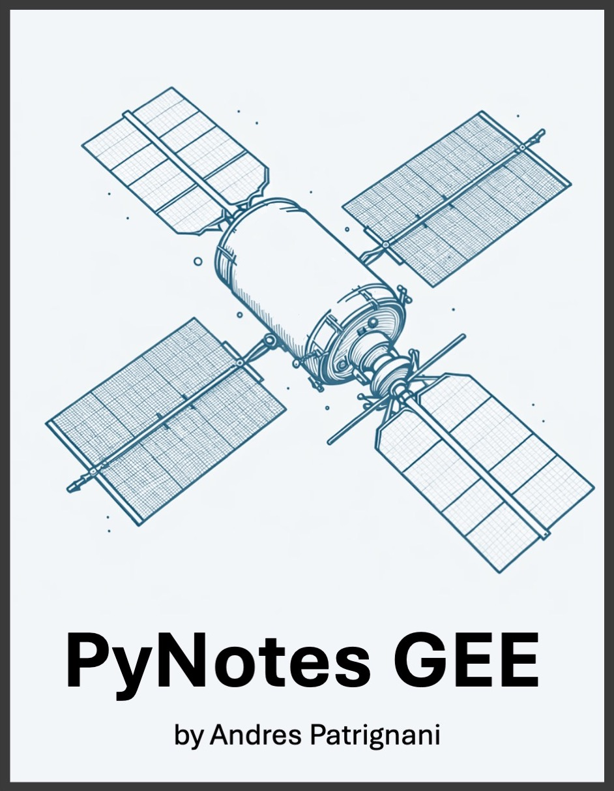

PyNotes GEE
Introduction and setup

“PyNotes GEE” is a guide for agricultural professionals, environmental scientists, graduate students, and data enthusiasts looking to leverage the power of Python in conjunction with Google Earth Engine (GEE) to make better data-driven decisions, and understand and manage our planet’s agricultural resources.
Google Earth Engine is an advanced cloud-based platform designed for petabyte-scale analysis of geospatial data, particularly satellite imagery. It provides a comprehensive set of tools for analyzing and visualizing data, facilitating the extraction of meaningful insights from the Earth’s surface over time. The powerful computing infrastructure behind GEE allows researchers to execute complex geospatial analyses that would be computationally intensive or infeasible on conventional laptops and desktop computers. Through its accessible interface, GEE enables automated processing pipelines using Python.
Through a series of short, practical, and step-by-step tutorials in the form of Jupyter notebooks, this compendium provides a comprehensive toolkit describing common techniques for extracting, processing, and analyzing Earth data using Python libraries like Xarray, Numpy, Pandas, Matplotlib, GeoPandas. The content is aimed at learners that are familiar with the Python programming language, but are just getting started with Google Earth Engine.
If you find any mistakes in the code or have suggestions for other tutorials, please create an issue in the Github repository
Getting Started with Google Earth Engine (GEE)
The Google Earth Engine platform can be used with two programming languages: Javascript and Python. This entire series of tutorials is based solely in the Python programming language.
First and foremost, here are two relevant links to the Google Earth Engine official documentation:
Python environemnt
A great way to start with Python is by downloading the Anaconda package, which comes with a curated selection of Python libraries tailored for data science.
Other required packages
The tutorials were developed with the Anaconda package in mind, however, some tutorial make use of additional libraries. Use the command pip install <package_name> to add the following packages:
- folium: Library for creating interactive maps.
- geopandas: Extends the pandas library to allow spatial operations particularly for vector data.
- rasterio: Library for raster data analysis.
- xarray: Package for working with labeled multidimensional arrays
- rioxarray: Extends xarray’s capabilities to handle geospatial raster data, including tools for easy raster input/output operations and spatial operations.
You can try to install the packages in one go using: pip install folium geopandas rasterio xarray rioxarray
GEE Account Setup:
- Create a Google Account: If you don’t have one already, sign up for a Google Account.
- Join Google Earth Engine: Visit the Google Earth Engine website and register for commercial or non-commercial use (free for academic and research use).
- Project Creation: Once your access is approved, create a new project in the Google Developers Console.
Authentication:
- Install the Earth Engine Python API: Use
pip install earthengine-apito install the Earth Engine Python API. - Open a new Jupyter notebook and import the Google Earth Engine module using
import ee. We will do this at the beginning of each tutorial. - Authenticate with Earth Engine: Run
ee.Authenticate()and follow the instructions to authenticate your account.
Other resources:
awesome-gee-community-catalog: Community-driven catalog of GEE datasets.
geemap: This is an outstanding and comprehensive set of tutorials for those that want a ready-to-use, well-documented, and hassle-free module with tons of videos.
Leafmap: A library built on folium for spatial analysis and interactive mapping int he notebook.
cartoee: Library for creating publication quality figures.